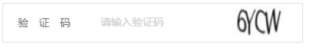

第一节：精讲
1.严格模式的概念和作用
除了正常运行模式，ECMAscript5添加了第二种运行模式：“严格模式”（strict mode）。顾名思义，这种模式是的Javascript在更严格的条件下运行。
严格模式的作用：
1.消除了JS语法的一些不合理、不严谨之处，减少一些怪异行为；
2.消除代码运行的一些不安全之处，保证代码运行的安全；
3.提高编译器效率，增加运行速度；
4.为未来新版本的JS做好铺垫
严格模式体现了JS更合理，更安全，更严谨的发展方向，包括IE10在内的主流浏览器都已经支持它了
注意：同样的代码，在“严格模式”中，可能会有不一样的运行结果，一些在“正常模式”下可以正常运行的语句，在“严格模式”下将不能运行，掌握这些内容，有助于更细致深入的理解JS，让你编程一个更好的程序员。
2.严格模式的调用
如何进入严格模式？
进入严格模式的标志，书写这一行语句 "use strict"
老的浏览器会把他当成一串普通的字符串，加以忽略
“严格模式”有两种调用方式，适用于不同的场合；
针对整个脚本文件：将 "use strict" 放在脚本文件的第一行，则整个脚本文件都将以“严格模式”运行，
如果这行语句不在第一行，则无效，整个脚本以“正常模式”运行。
如果不同模式的代码文件合并成一个文件，这一点需要特别注意。
针对单个函数：将 "use strict" 放在函数的第一行，则整个函数以“严格模式”运行。
脚本文件的变通写法：因为第一种调用方式不利于文件合并，所以更好的做法是，借用第二种方法，将整个脚本文件放在一个立即执行的匿名函数中
匿名函数：不需要调用，直接执行，可以自调用
(function(){
console.log(1);
})()
3.进入严格模式之后的行为变更
进入严格模式之后，需要进行哪些行为变更：
1.全局变量声明时，必须加关键字( var)
正常模式：a = 10; console.log(a) //10
严格模式： a = 10; console.log(a) //a is not defined
2.this无法指向全局对象
正常模式：function fn(){ console.log(this) } //window
严格模式：function fn(){ console.log(this) } // undefined
3.函数内不允许出现重名参数
正常模式：function fn( a, b,b ){ console.log(a,b) }
fn(1,2,3) //1,3
严格模式： function fn( a,b,b ){ }
//报错：Duplicate parameter name not allowed in this context 在此上下文中不允许出现重复的参数名
4.arguments对象
4.1 arguments对象不允许被动态改变
正常模式：function fn(a){
a=20;
console.log(a); //20
console.log(arguments[0]); // 20
}
fn(10);
严格模式：function fn(a){
a=20;
console.log(a); //20
console.log(arguments[0]); //10
}
fn(10);
4.2 arguments对象不允许被自调用（递归）
正常模式：function fn(a){
if( a == 1 ){
return 1;
}
return arguments.callee(a-1) + a;
}
fn(3); //6
严格模式： function fn(a){
if( a == 1 ){
return 1;
}
return arguments.callee(a-1) + a;
}
//报错： 'caller', 'callee', and 'arguments' properties may not be accessed on strict mode functions or the arguments objects for calls to them
//报错："caller"，"arguments"，"callee"，不能在严格模式下使用
5.新增的保留字：implements，interface，let，package，private，protected，public，static，yield
4.ES5新增数组常见方法（indexof／forEach／map／filter）
新增的数组常见方法：以下说明中， 红色为必选参数，蓝色为可选参数
1.indexOf( data,start);
用于返回某个数组或者字符串中规定字符或者字符串的位置；
var arr = ["a","b","c","d","e"];
arr.indexOf("a"); //0
//返回 当前查询字符所在的位置的下标，如果查询不到，返回-1，start表示从第几位开始查询。
2.forEach( callback); 循环，遍历数组
var arr = [2,3,4,5,6,7,8];
arr.forEach(function( value,index,arr){
console.log(value,index,arr);
//函数中的三个参数分别代表，该项的值，该项下标，数组本身
})
3.map( callback); 会遍历当前数组，然后调用参数中的方法，返回当前方法的返回值；
3.1 执行次数和参数，参考forEach
var arr = [2,3,4,5,6];
arr.map(function(value,index,arr){
console.log(value,index,arr);
})
3.2 返回值 及 应用
map不会改变原有数组，而是将函数执行一次之后的返回值组成一个新数组，返回出来
var arr = [2,3,4,5,6];
var newArr = arr.map(function(value,index,arr){
return value-1;
})
console.log( newArr ); //得到一个经过计算的数组
4.filter( callback); 同map方法，返回值为布尔值true 的时候，才会返回该数据
4.1 同map的3.1
4.2 filter不会改变原有数组，而是将函数执行一遍，只有在布尔值为true的时候才会返回 该数据
var arr = [2,3,4,5,6];
var newArr = arr.filter(function(value,index,arr){
return value > 3;
})
console.log( newArr ); //得到一个经过筛选的数组
3.字符串的两种创建方式（常量和构造函数）
字符串的创建：
var str = "hello world"; //常量，基本类型创建
var str2 = new String("hello world"); //构造函数创建
字符串的属性：
str.length //字符串的长度
4.字符串常见API（indexOf／charAt／substring／slice／split／replace）
1.indexOf(data,start); // 用于返回某个数组或者字符串中规定字符或者字符串的位置；
var str = "abcdefg”;
str.indexOf("a"); //0 返回当前查询字符所在的位置的下标，如无，返回-1，start表示从第几位开始查询。
2.charAt( index); //返回指定位置的字符,index为下标
3.substr( n,m);
4.substring( n,m); //返回从指定位置n，到结束位置（不含）m 的字符串，如果不指定结束位置，则从开始位置到结尾
5.slice( n,m); //同substring，需要注意和数组中方法slice()的相似
6.split("-"); //通过指定字符分割字符串，返回一个数组
7.replace("需要替换的字符串","替换之后的字符串") //将字符串中的一些字符替换为另外一些字符。最好配合正则使用
第二节：应用
1.通过json数组实现商品列表（字符串和html）
2.敏感词过滤【喵了个喵=====>***】
3.用户名格式要求
1.不允许为空，有提示
2.不允许以数字开头
3.长度必须在6~20之间
第三节：精讲
1.字符串的重要性案例
观察京东商品数据
js的重要作用之一－－－－交互－－－－人机交互（事件）－－－－服务器交互（ajax）
服务器交互，从服务器获取数据，数据的处理方式，将json对象－－－－转换成字符串操作。
案例：商品列表
字符串操作重要性不言而喻！
字符串的操作：从1+1=2到1+1=11，有什么样的区别
2.ASCII码和字符集
ASCII：American Standard Code for Information Interchange，美国信息交换标准代码。
Unicode编码：
Unicode （统一码、万国码、单一码）是计算机科学领域里的一项业界标准,包括字符集、编码方案等。Unicode 是为了解决传统的字符编码方案的局限而产生的，它为每种语言中的每个字符设定了统一并且唯一的二进制编码，以满足跨语言、跨平台进行文本转换、处理的要求。 Unicode目前普遍采用的是UCS-2,它用两个字节来编码一个字符。
如汉字"经"的编码是0x7ECF,注意字符码一般用十六进制来 表示，为了与十进制区分，十六进制以0x开头，0x7ECF转换成十进制 就是32463,UCS-2用两个字节来编码字符，两个字节就是16位二进制， 2的16次方等于65536,所以UCS-2最多能编码65536个字符。
GBK编码：
GBK 全称《汉字内码扩展规范》（GBK即“国标”、“扩展”汉语拼音的第一个字母，英文名称：Chinese Internal Code Specification）。GBK 向下与GB2312编码兼容，向上支持 ISO 10646.1国际标准，是前者向后者过渡过程中的一个承上启下的产物。
UTF-8编码：
UTF-8 （8-bit Unicode Transformation Format）是一种针对Unicode的可变长度字符编码，又称万国码。 UTF-8用1到4个字节编码UNICODE字符。用在网页上可以同一页面显示中文简体繁体及其它语言（如英文，日文，韩文）。
字符串常见API(charCodeAt\fromCharCode)
1.myStr.charCodeAt(num)
返回指定位置的字符的Unicode（是字符编码的一种模式）编码。
2.String.fromCharCode()
String的意思就是不能用自己定义的字符串名字来调用，只能用String来定义调用。接受一个或多个指定的Unicode值，然后返回一个或多个字符串。(把unicode编码转换为字符串)。
1.数字字母混合的验证码

2-1.aabccd统计每个字符出现的次数，结果显示{a:2, b:1, c:2, d:1}
2-2.去掉重复的字符，使结果显示abcd
3.随机生成一个五位以内的数，然后输出该数共有多少位，每位分别是什么
昨天作业中的数组去重的11中方法